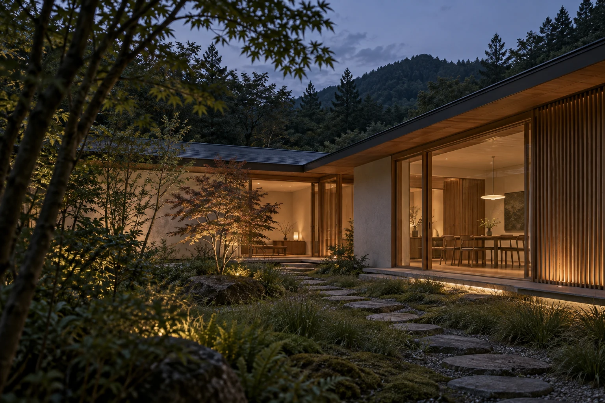
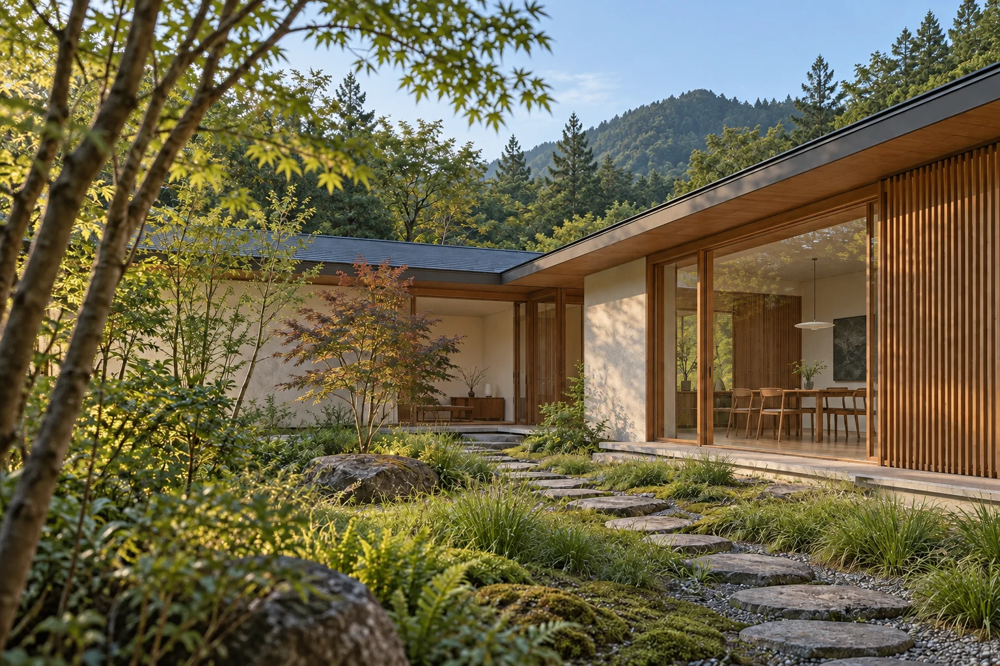
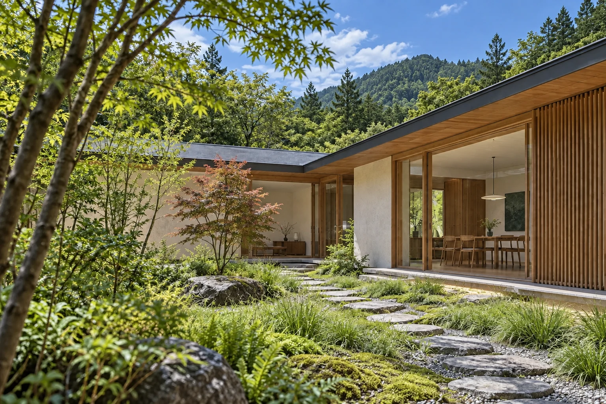
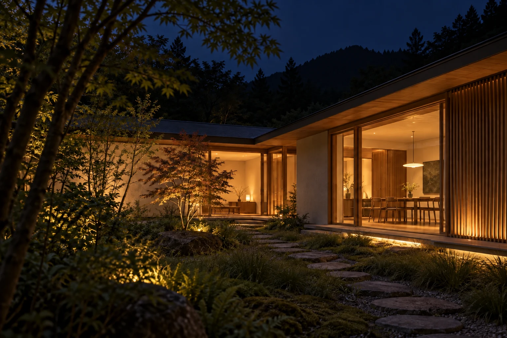
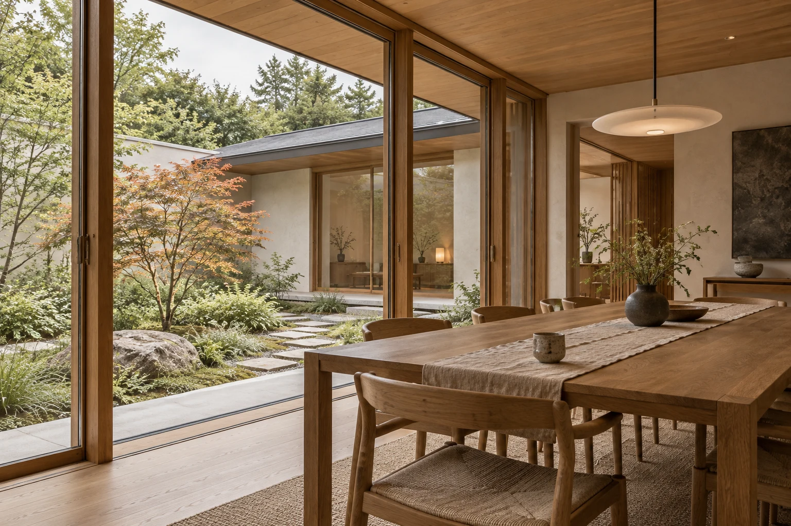
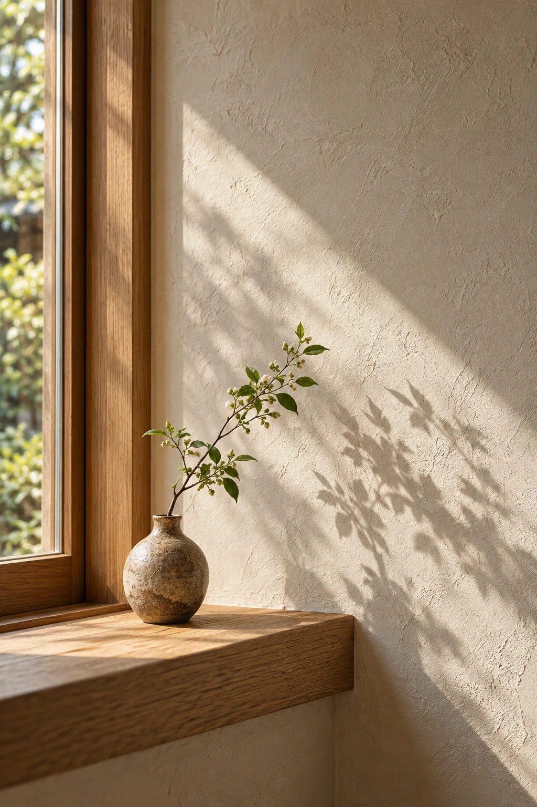

子どもの成長で、
住まいを変えない。
家族の人数や過ごし方は、年月とともに変わっていく。間取りを固定しすぎず、庭との距離感で暮らし方の変化を受け止められるようにしました。

COURTYARD HOUSE
食卓でお茶を飲む人と、軒の下で本を読む人。別々のことをしていても、同じ庭の気配を感じている。そんな距離感を、この住まいの出発点にしました。
庭に面して住まいを折り曲げ、室内から緑へ視線が抜ける構成に。軒は室内と庭のあいだに、日差しや雨を感じながら過ごす余白をつくります。
夜になると、室内の灯りが庭の輪郭を照らす。窓の外が暗く閉じるのではなく、夕食の時間にも庭がそっと寄り添う。その一日の変化まで、サイトで伝えることを考えました。
DESIGN STORY / 提案の背景
家族の人数や過ごし方は、年月とともに変わっていく。間取りを固定しすぎず、庭との距離感で暮らし方の変化を受け止められるようにしました。
窓を庭に向け、軒の下に内外の中間となる場所を。間取りだけでなく、眺めと距離感から構成する提案です。
朝の光、昼の緑、夕方の灯り。完成写真に時間の視点を加え、その家で過ごす姿を想像できるようにしています。
この物語はコンセプトの設計意図です。実在の施主への取材・お客様の声ではありません。
ONE HOME, FOUR MOMENTS
同一の構図から、時間帯だけを描き分けた4枚です。
暮らしの一日を、この住まいで想像してみてください。



同一構図を参照したAI生成の編集イメージです。時刻は演出上の設定で、実測の日照シミュレーションではありません。
PHOTO GALLERY


A QUIET PALETTE
色を足す代わりに、木目と壁の陰影を。
素材同士が静かに引き立て合う、
落ち着いた住まいをイメージしました。
素材画像は雰囲気を示す生成イメージです。
施工方法や製品の仕様を示すものではありません。
THE THINKING BEHIND THIS WEBSITE
完成写真に、設計の理由と暮らしの場面を添える。事例を「写真の一覧」から「この会社を選ぶ理由」へ育てるためのページ構成です。
自社の事例を、もっと伝わる形にしたい。そんな企業様のサイト制作・改修をご相談いただけます。
「結」を見て相談する ↗「結」の相談フォームへ移動します。